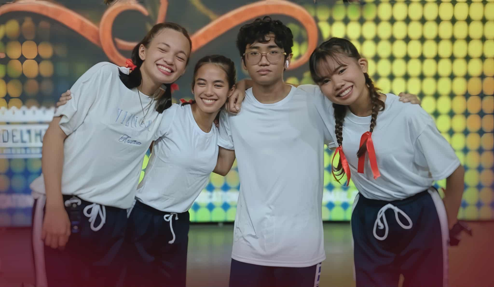

WHO ARE WE?
We are artists whose bound by passion and imagination. We storytellers who paint emotions, capture dreams, and bring life to ideas through every stroke, frames, and color.
This website was established in 2025 originally as a group project by artists who share a deep passion for art. It is a collective gallery of visual works highlighting passion, imagination, and the never-ending dedication of various artists portraying their artworks. This invites aspiring artists to pursue their creativity, experiment fearlessly, and transform their imagination into meaningful and wonderful works of art.
MEET THE ARTISTS
EYMAN PAISAO, artistically known as "emiieyms", is a 19-year-old artist and journalist who brings ideas to life through various creative forms, including video editing, animation, and illustration. These mediums allow her to freely express her imagination and emotions. For her, art is more than a hobby—it is a driving force that fuels her life and shapes her identity as a whole.
Check out her works

SAMANTHA LOURAINE TOSTON, is an 18-year-old filmmaker and visual artist whose work blends dark, edgy aesthetics with mystery and emotion. Through her creations, she allows audiences to experience the world as she sees it—raw, unsettling, and unforgettable.
Check out her works

CARL JUSTIN ACOSTA, is an artist who has loved art for a long time. He started drawing as a hobby because he enjoyed it. With lots of free time, he would spend hours sketching whatever came to mind, creating anything he liked. He believes that anyone can make art—as long as you enjoy what you’re doing, you can get better at it.
Check out his works

SHILOH JEAN LOPEZ, is an 18-year-old who has been passionate about art since she was six. Ever since Grade 1, her notebooks have been filled with doodles and sketches that tell little stories of imagination and creativity. Over time, her love for art grew as she discovered a new joy in creating beautiful flower designs. Whether through pencil lines or petals, she loves bringing a touch of artistry to everything she does.
Check out her works